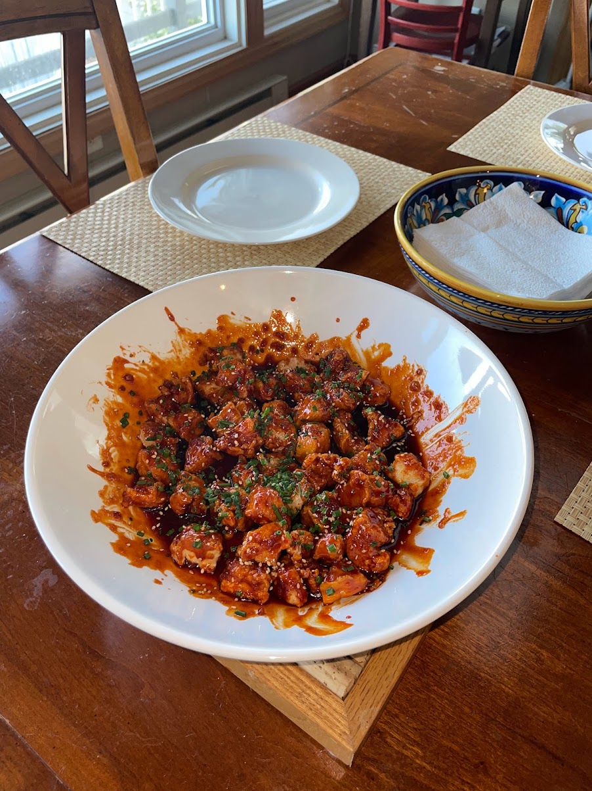

Korean Sticky Chicken

Description
Fried Chicken in a gochujang sauce. Best served over rice with green onions as garnish. A delightful spin on traditional popcorn chicken
Ingredients
- 1 lb chicken, boneless, skinless, thighs or breasts. Cut into 1 inch pieces
- 2 tbsp rice wine vinegar
- 1/2 cup cornstarch
- 1 cup flour
- 1 tsp black pepper
- 2 tbsp chili garlic sauce
- 1/2 cup canola oil (for frying)
- 1 tbsp sesame seeds
- 2 scallions, thinly sliced
Sauce
- 1 garlic clove, minced
- 2 tbsp gochujang
- 1 tbsp soy sauce
- 1 tbsp rice wine vinegar
- 2 tbsp light brown sugar
- 1 tbsp honey
- 1 tbsp toasted sesame oil
Instructions
- Preheat canola oil in a heavy bottomed pot to 350 degrees
- Combine chicken, rice wine vinegar,and chili garlic sauce in a large bowl. Allow to marinate for 15 mins
- In that same bowl, add cornstarch, then flour to chicken. Make sure pieces are fully coated. Finish by adding the salt and pepper
- Fry chicken in batches for 4-5 minutes until light brown and crispy
- For the sauce, combine all ingredients into a saute pan over medium high heat. Allow sauce to come to a boil, then reduce to medium-low heat and let simmer until sauce is thickened
- Add the sauce to the cooked chicken and toss to coat. Garnish with sesame seeds and scallions, then serve over rice
Home